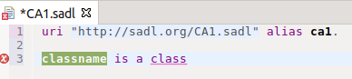

People are much better at recognizing than recalling. Therefore, when composing content in the controlled-English SADL grammar, it can be difficult to remember exactly what can be written next but much easier to recognize what one wants to write from a list of possibilities. Providing this list of possible next words or names in the grammar (after the current cursor location) is called content assist.
The Eclipse-based SADL IDE provides content assist. By default in most environments, the key binding for content assist is control-space (hold down the Control key and press the Space Bar). The key binding for content assist can be viewed/modified by going to the Preferences menu, General -> Keys, and scrolling down to "Content Assist".
Normally a request for content assist will result in the display of a list of possibilities. However, if there is only one possibility found it will be automatically inserted into the editor after the current cursor location.
Note that if the cursor is at the end of a word it may be necessary to add a space before the expected content assist for next words will be computed. Otherwise content assist will look for matches that extend the characters before the cursor to create a valid option.
Eclipse provides a means of extending content assist through templates. Templates are fill-in-the-blank snippets of the language that are accessible through content assist. Templates appear at the bottom of the list of content assist possibilities.
For example, selecting the template for "Create Class" from the content assist menu at the beginning of a new statement results in the insertion of a class declaration into the editor with the new class name selected, ready to be replaced with whatever is typed.
After typing the new name, pressing the Tab key will move the cursor to the next entry, in this case the end of the declaration where the statement can be continued by user input or through additional content assist.
The SADL distribution includes some template options including "Create Class", Create Subclass", and "Create Property". Users can add their own templates for the grammar constructs that they use often by going to Window -> Preferences -> SADL -> Templates and clicking on "New". Templates can be enabled by checking or disabled by unchecking.
Disregarding comments, a SADL model must begin with the keyword uri. If a new .sadl files is created and content assist is then requested, the result will be the insertion of this keyword:
The keyword uri must be followed by a valid URI string. If content assist is requested again, the default URI for the model will be inserted, since it is the only item in the list. Note that the first part of the default URI can be controlled by setting the Base URI in SADL Preferences. The last part of the default URI is derived from the SADL file name.
After the required uri statement has been completed, a request for content assist will give a list of all of the keywords that can begin a new statement.